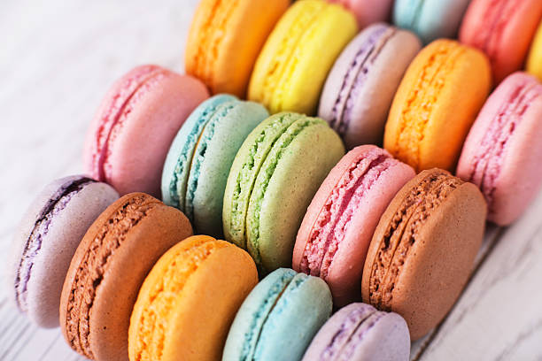

Macrons!
Home

The Macaron
The macaron as we know it today was created in Paris.
It is a delicious confection made from a meringue base of usually egg whites, sugar, and almond meal. You will often find them coloured in a wide cariety of food colourings.
The fillings may vary but I assure they will be quite the treat no matter what filling they have.
However, don't let their appearance fool you. These adorable treats can be quite the headache top make to those without experience.
This delicate cookie which is known for its smooth shell and rich filling can be simply made by following the recipe listed below. It may take a few tries to get the process down just right, but when you do, you will be proud of making this French delicacy.
Ingredients
For the shell
- 100 g aged egg whites (from about 3 large eggs), brought to room temperature
- 90 g granulated sugar
- 130 g powdered sugar
- 140 g finely ground almond flour
- 1/4 tsp cream of tartar (optional, helps stabilize meringue)
- 1 tsp vanilla extract or other flavoring
- Gel food coloring (avoid liquid, which adds too much moisture)
For the filling
- 1 cup of powdered confectioner's sugar
- 1/2 cup unsalted butter, softend
- 1 tsp vanilla extract
- 1/2 tbsp whole milk
Steps
Step 1: Prepare ingredients and equipment
- Age the egg whites: Separate egg whites from yolks and store in an airtight container in the refrigerator for at least 24 hours. This reduces moisture and helps create a more stable meringue. Bring the aged whites to room temperature before beginning.
- Sift dry ingredients:Pulse the almond flour and powdered sugar together in a food processor a few times until finely ground. Sift the mixture through a fine-mesh sieve into a medium bowl to remove any lumps. Discard any remaining large pieces. For best results, repeat this process once more.
- Prepare your pans:Line two baking sheets with parchment paper or a silicone baking mat. A silicone mat is often recommended for more consistent results. Place a template of 1.5-inch circles under your parchment paper to guide your piping.
Step 2: Make the meringue
- In the clean, dry bowl of a stand mixer fitted with a whisk attachment, begin whipping the room-temperature egg whites on medium speed until they become frothy.
- Add the cream of tartar (if using) and gradually pour in the granulated sugar while continuing to beat.
- Increase the mixer speed to medium-high and whip until the meringue reaches a stiff-peak stage. It should be shiny and thick, and the peaks should stand straight up when you lift the whisk.
- Add your gel food coloring and vanilla extract. Mix briefly until just combined
Step 3: Master the macaronage
- Add about one-third of your almond flour mixture to the meringue. Gently fold it in with a rubber spatula using a circular, folding motion.
- Add the remaining dry ingredients in two more additions, folding until the mixture is fully incorporated.
- Check consistency:Continue folding until the batter flows off the spatula in a slow, thick ribbon, and you can draw a figure-eight with it without it breaking. It's better to slightly under-mix than over-mix, as you will continue mixing as you pipe.
Step 4: Pipe and rest the shells
- Transfer the batter to a piping bag fitted with a round tip (about 1/2 inch).
- Holding the bag vertically, pipe 1.5-inch rounds onto your prepared baking sheets, following the template underneath.
- Release air: Firmly tap the baking sheets on the counter several times to release air bubbles. Use a toothpick to pop any remaining visible bubbles on the surface.
- Rest: Let the piped macarons rest at room temperature for 30 to 60 minutes, or until a dry "skin" has formed. The shells should feel smooth and no longer sticky to the touch.
Step 5: Backe the macarons
- Preheat your oven to 300°F (150°C) and place the rack in the center. An oven thermometer is highly recommended for accurate baking.
- Bake one sheet at a time for 12 to 15 minutes, rotating the pan halfway through. The macarons are done when they have developed "feet" and do not wobble when gently touched.
- Let the macarons cool completely on the pan before attempting to remove them.
Step 6: Make the buttercream filling and assemble
- In a medium bowl, beat the softened butter until it is smooth and creamy.
- Gradually add the powdered sugar and salt, beating until well combined.
- Stir in the milk and vanilla extract until the mixture is light and fluffy.
- Pair up same-sized macaron shells. Pipe a dollop of filling onto the flat side of one shell.
- Gently press another shell on top, twisting slightly, until the filling reaches the edges.
Step 7: Mature and server
- Place the filled macarons in an airtight container and refrigerate for 24 hours. This process, called "maturation," softens the shell's interior and melds the flavors, giving you the perfect texture.
- Bring the macarons to room temperature for about 30 minutes before serving.